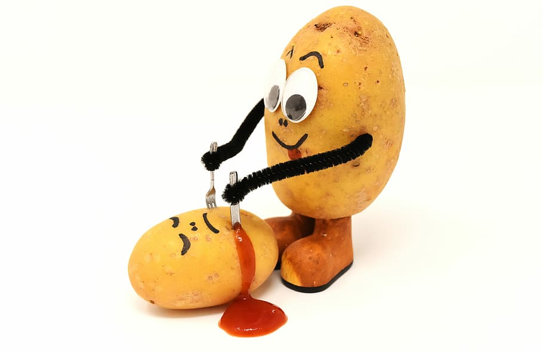

El buen yantar, todo es empezar.
Si quieres sentirte como en casa y volver a recordar
aquellos sabores tan increíbles de la infancia,
este es tu lugar:
| Restaurante Sabrosa Morriña |
|---|
| C/Málaga 199 - ( Junto al parque Puchero ) |
| València |
| Reservas: 6665554545 |
Para empezar, puedes elegir uno o una combinación de los siguientes platos:
Ahora viene el plato principal.
¡Atención a la opción veggie!
Para acabar, un poco de rico, rico dulce
23 €
El pan, la bebida y el café se inclluyen en el precio